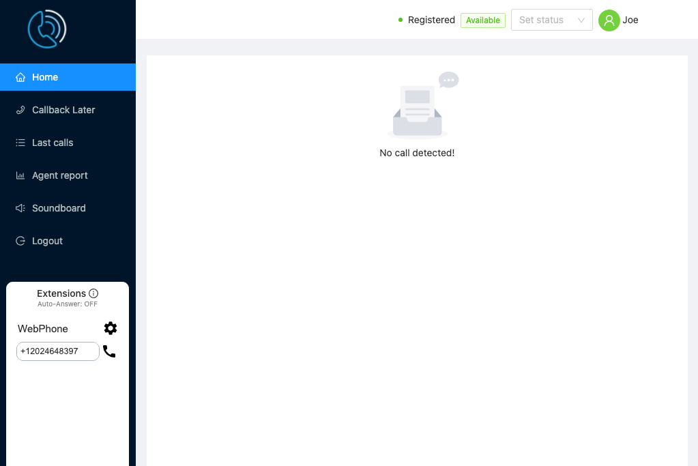
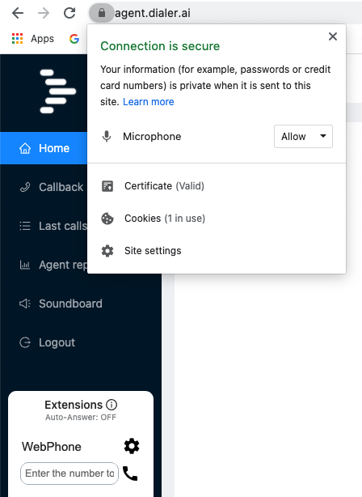
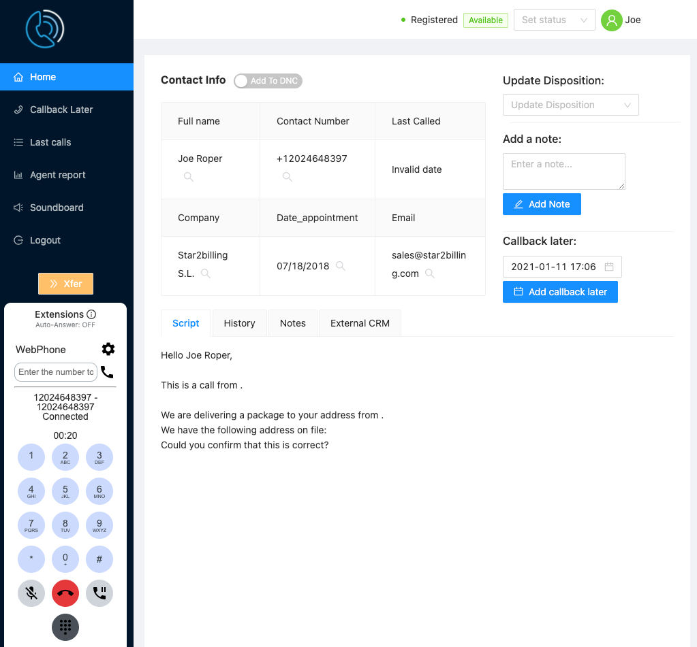
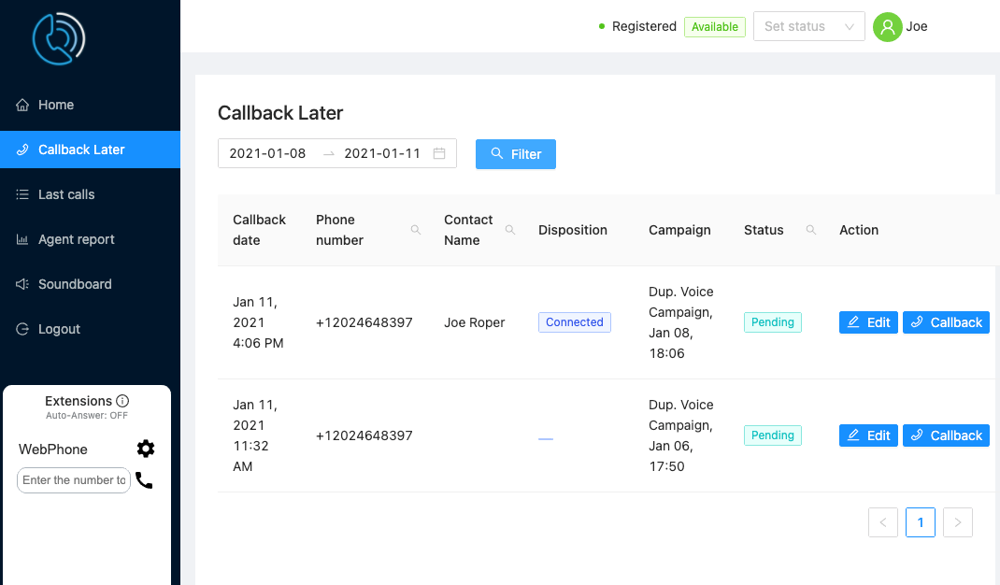
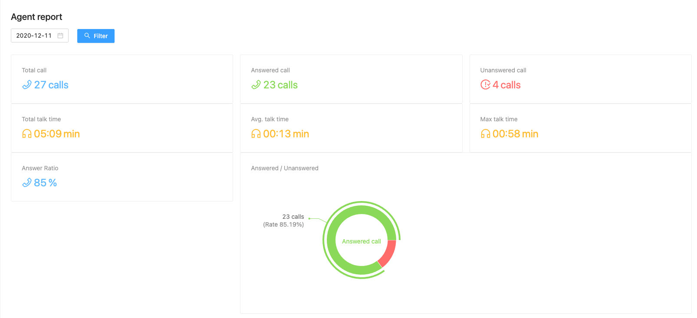
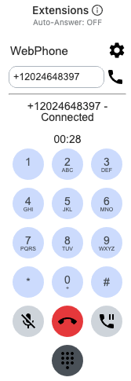

CallCenter Agent Interface¶
Introduction to the Agent Interface¶
The Dialer comes with an agent interface allowing agents to log in, make and receive calls, transfer, manage callbacks and otherwise interact with contacts.
Logging on to the Agent Interface¶
The adminstrator provides the agent with the link to log in as well as the username and password. They will also explain whether you need to configure a softphone or simply answer calls directly from the agent web interface using the WebRTC phone.
Once the agent logs on, they need to check the top right to confirm that they are registered
Once registered, which might take a few seconds, the agent can then dial 0002 to do a Tone Test, which plays a continuous tone and confirms the quality of the connection. If there are breaks in the tone, this may indicate connectivity issues.
The agent can dial 0001 for an Echo Test to check that speakers, headset and microphone are working as expected.
- 0001 : Echo Test
- 0002 : Tone Test
On login or on dialling, the browser may ask for permission to use the Microphone, headset and speakers. Allow permission. You can check the browser to ensure permissions have been granted by clicking on the padlock next to the URL in the address bar.
Logging on to the Queue (1001)¶
In order for the agent to receive calls, they need to be logged on to the queue to accept calls. The statuses are:-
- Log Out - Not available to take calls.
- On Break - Temporarily not accepting calls
- Available - Ready to accept calls
When the agent’s status is ‘Available’ calls will come arrive in the interface, displaying data on the contact and the webphone will ring. The agent clicks the green answer button to accept the call. Between the contact being directed to the queue and the agent answering the call, the contact will hear Music on Hold.
The agent can set their status with the dropdown in the agent portal or they can dial the following short codes:-
- 1000 : Log out
- 1001 : Available
Instant Answer (1002 & 1004)¶
Sometimes the calls need to be directed to the agent without any delay, as is the case with predictive dialling where the intent is to give the contact the impression you have phoned them directly. Although the adminstrator can set your phone to Auto Answer, the more efficient method is to dial in on ‘Agent Standby’.
- Agent Standby : Dial 1002 to access the queue to automatically answer calls instantly while listening to Music on Hold. When a call comes in, the contact’s data will be displayed on screen, music on hold will stop, a short tone will be heard and then the agent will be talking directly to the contact.
- Agent Standby (Silence) : Dial 1004. As above, except music on hold is muted. When a call comes in, a short tone will be heard and the agent will be talking to the contact.
At the end of the call, the agent can hangup the call by dialling *0 on the webphone or softphone, or in the case of a separate softphone, by clicking the hang-up button in the agent portal. If the agent hangs up as normal then they would have dial 1002 or 1004 to log back in.
When the agent hangs up 1002 or 1004, the agent’s status is set to logged out.
Logging Out (1000)¶
As mentioned previously, hanging up a call to 1002 or 1004 will set the agent’s status to Logged Out.
If an agent does not answer the phone several times in a row while available, the agent will be logged out. The trigger points for this are set by the administrator in each agent configuration.
The agent can log out with the dropdown. If they select ‘On Break’ its functionally the same as ‘Log Out’. The agent can also dial 1000 to log out.
Receiving Calls¶
When a call is received, the contact’s details are displayed on screen, and the contact can answer the call using the web phone or on a separate softphone.
Next to each element is a magnifying glass which searches Google with that search term
Agent Interface Functions¶
Update Dispostion - The adminstrator can set Lead Dispositions and these can be selected and set with the dropdown
Add A Note - Write notes that will be saved with the contact for future calls.
Callback Later - Set a date and time to callback a contact. The callbacks to perform are listed in the left hand menu. Callbacks need to be triggered manually. By default the date is set to 24 hours hence, unless it’s Friday, then the callback will be set to Monday.
Script - Script set by the adminstrator in the Call Center Config.
History - Timeline of notes added and dispositions changed.
Notes - Content of notes previously added
External CRM - Link to open an external web based CRM system at the appropriate record, configured by the adminstrator in the Callcenter Config.
Agent Interface Sidebar¶
Home - The main screen as per the picture above.
Callback Later - List of contacts to call back in time order, with one click calling and edit facility.
Last Calls - List of recent calls with status and disposition.

Agent Report - Reporting on agent activity.
Soundboard - Play pre-recorded audio to the contact with one click. Each audio file can be previewed by the agent. Audio can be interrupted and the agent take over at any time with the stop audio button. adminstrator can configure what audio is available for each agent individually.

Logout - Log out of the agent interface.
Wrap-up Counter - while the call comes to an end, a timer is displayed counting down the wrap-up time before the next call is allowed.
Xfer¶
Transfer destinations are configured in advance by the adminstrator in the Callcenter Transfer and Callcenter Config screens under the Callcenter menu.
Two types of transfer are supported:
- Cold Transfer - call is transferred and the agent is disconnected immediately.
- 3 Way Transfer - Agent, Contact and Transferee are put into a three way call to introduce the Contact. The agent then hangs up leaving the contact and transferee connected.
Making Calls with the Webphone¶
The webphone is used to answer calls, navigate through IVR menus, mute, and put calls on hold.
Dialer Admin needs to configure outbound calling for their agents, setting the callerID and gateway to use.
Numbers may be dialled international format. Agents are limited to one call at a time, and a limit has been put on the total number of calls allowed each day. All calls are automatically recorded and are available to the adminstrator.
External SIP Phone¶
An external SIP phone can be used instead of the web phone. Zoiper is a popular choice and we have provided a video on installing and configuring Zoiper at https://youtu.be/ZVRgvfFmn5M. The agent’s adminstrator will inform the agent if this is necessary and provide the relevant credentials.